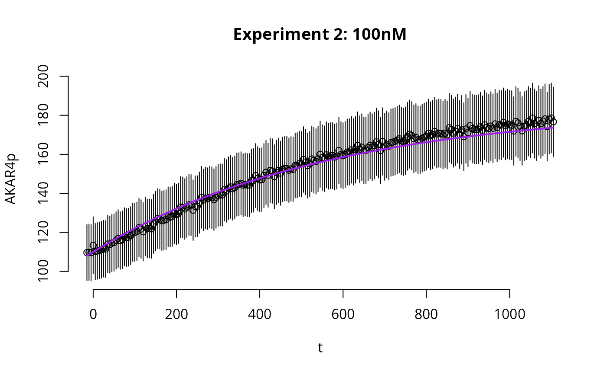
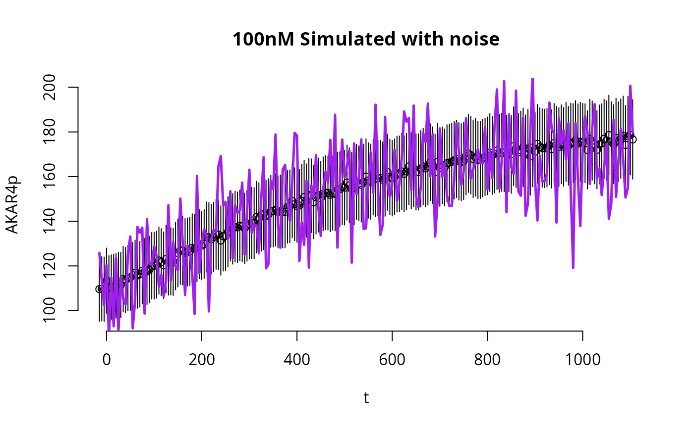
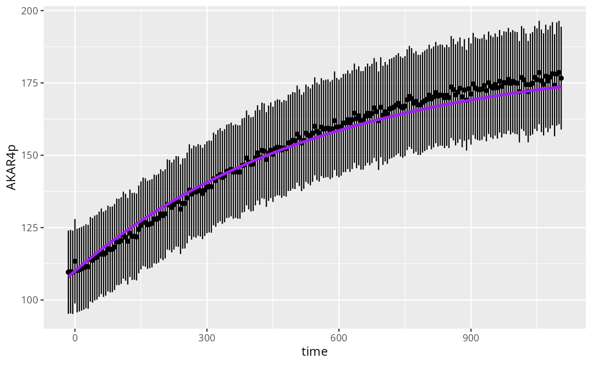
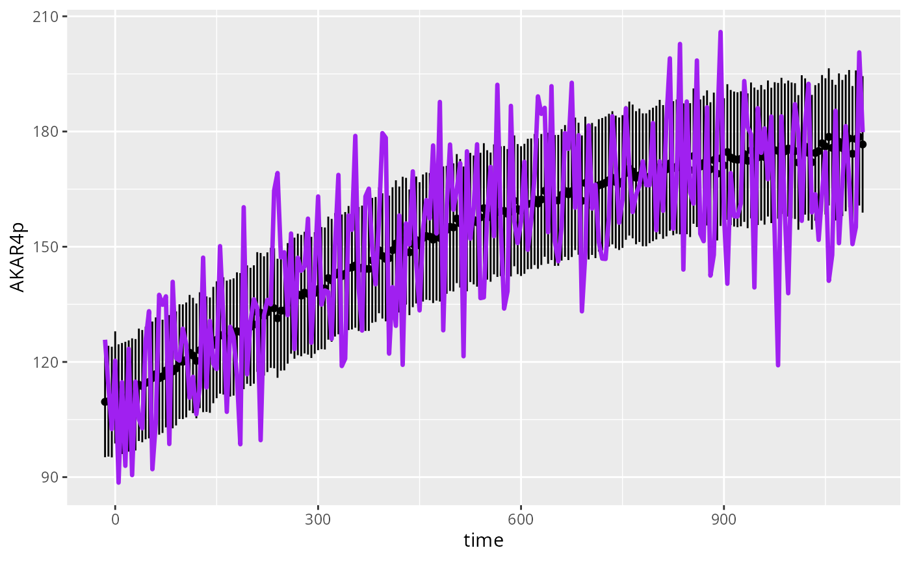

Simulate the AKAR4 deterministic model
simAKAR4.RmdThis article provides code to simulate the AKAR4 deterministic model (one time, no sampling). Specifically, given a vector of initial conditions and a default parameter, we simulate the time evolution of the concentrations of compounds in the system.
In this article, we are simulating the AKAR4 model with default parameters which are not expected to fit the data perfectly.
Load the Model
The following instructions allow you to load all information needed to simulate the AKAR4 model in R. More details on each of the following commands can be found in the article “Build your own model”.
f <- uqsa_example("AKAR4") # TSV files
m <- model_from_tsv(f) # data.frames
o <- as_ode(m) # list
#> Loading required namespace: pracma
C <- generateCode(o) # character vector
#> Warning in generateCode(o): This function will start a background yacas process via Ryacas.
#> There is currently no working way to reset/restart that process.
#> It is therefore not advisable to generate the code for two different models in the same R session.
#> The definitions for the two models will be mixed up.
modelName <- write_and_compile(C)
#> './AKAR4_gvf.c' was created.
#> building a shared library from c source, and using GSL odeiv2 as backend (pkg-config is used here).
#> cc -shared -fPIC `pkg-config --cflags gsl` -O2 -o './AKAR4.so' './AKAR4_gvf.c' `pkg-config --libs gsl`This is the created file that will be used in simulations:
The AKAR4 deterministic model is an ODE model that describes the evolution in time of the concentrations of compounds in the system. The following R commands will print the names of the compounds in the system and the corresponding default initial conditions.
# Compounds or "Species"
values(m$Compound)
#> AKAR4 AKAR4_C AKAR4p C
#> 0.2 0.0 0.0 0.0
#> attr(,"unit")
#> AKAR4 AKAR4_C AKAR4p C
#> "µM" "µM" "µM" "µM"
# Parameters
values(m$Parameter)
#> kf_C_AKAR4 kb_C_AKAR4 kcat_AKARp
#> 0.018 0.106 10.200
#> attr(,"unit")
#> kf_C_AKAR4 kb_C_AKAR4 kcat_AKARp
#> "1/uM*s" "1/s" "1/s"The ODE system that will be used to run simulations from the AKAR4 model is derived from the reactions in the AKAR4 model:
# Reactions in the AKAR4 system
m$Reaction
#> kinetic.law reactants arw products
#> reaction_1 kf_C_AKAR4*C*AKAR4 - kb_C_AKAR4*AKAR4_C C + AKAR4 <=> AKAR4_C
#> reaction_2 kcat_AKARp*AKAR4_C AKAR4_C <=> AKAR4p + C
#> is.reversible
#> reaction_1 1
#> reaction_2 0Load Experiments (data)
We create simulation instructions from m for
o:
ex <- experiments(m,o)This variable includes information about the initial value problem (for the ODE):
print(ex[[1]]$initialState)
#> AKAR4p C
#> 0.0 0.4But, also the measured data, as a matrix:
print(dim(ex[[1]]$data))
#> [1] 1 225
cat(
sprintf("%30s: %i","number of outputs",NROW(m$Output)),
sprintf("%30s: %i","number of measurement times",length(ex[[1]]$outputTimes)),
sep="\n"
)
#> number of outputs: 1
#> number of measurement times: 225Also available as data.frame:
Simulate
Here we show how to simulate the AKAR4 ODE model using the same conditions that were used in each of the experiments. In AKAR4, the 3 experiments differ only in the initial conditions. In larger models, different experiments may also have different inputs, and this will be also taken into account when running the R commands below.
Function simulator.c will output a function (variable
simulate in the code below) that will allow us to simulate
the AKAR4 ODE model (specified through the input argument
modelName) given the experimental conditions saved in
ex.
simulate <- simulator.c(ex,modelName)
simulate_noise <- simulator.c(ex,modelName, noise = TRUE)The variable simulate is a function that requires a
parameter p as input argument. The output of function
simulate is the simulation of all experiments in
ex using the ODE model o (written as C code to
a file):
In the AKAR4 example we have a list of 3 experiments, thus function
simulate simulates the entire system 3 times, each time
considering the specific initial condition of the corresponding
experiment. The output of simulate (y) is a
list of length(ex) elements, corresponding to the 3
experimental conditions. Each element of the list is in turn a list with
at least these elements:
-
state(simulated trajectory of the ODE system) -
func(the corresponding output of the system given the computedstate) -
cpuSeconds(simulation runtime) status
Plot
Here we plot the results of one of the simulations.
E <- 2 # which experiment to plot
# experimental data for experiment E
out <- ex[[E]]$outputValues$AKAR4pOUT
# measurement error for experiment E
err <- ex[[E]]$errorValues$AKAR4pOUT
# measurements time points
tm <- ex[[E]]$outputTime
# Plot simulations
par(bty='n',xaxp=c(80,200,4))
plot(
as.errors(tm), # time points
ex[[E]]$data, # data points (as errorbars)
ylim=c(95,200),
ylab="AKAR4p",
xlab="t",
main=sprintf("Experiment %i: %s",E,names(ex)[E])
)
lines(
tm, # time points
y[[E]]$func[1,,1], # simulated trajectory
col="purple",
lwd=2
)
We now run the same code to plot the simulations with noise
y_with_noise.
E <- 2 # which experiment to plot
# Plot simulations
par(bty='n',xaxp=c(80,200,4))
plot(
as.errors(tm), # time points
ex[[E]]$data, # data
ylim=c(95,200),
ylab="AKAR4p",
xlab="t",
main=sprintf("%s Simulated with noise",names(ex)[E])
)
lines(
tm, # time points
y_noisy[[E]]$func, # simulated trajectory
lwd=2.5,
col="purple"
)
Plots with ggplot2
The following code plots simulations and data using an alternative function, from the package ggplot2.
require(ggplot2)
#> Loading required package: ggplot2
D <- data.frame(
time=ex[[E]]$outputTime,
AKAR4p=as.numeric(ex[[E]]$data),
AKAR4pERR=errors(ex[[E]]$data),
sim=as.numeric(y[[E]]$func)
)
ggplot(D) +
geom_linerange(mapping=aes(x=time,y=AKAR4p,ymin=AKAR4p-AKAR4pERR,ymax=AKAR4p+AKAR4pERR),na.rm=TRUE) +
geom_point(mapping=aes(x=time,y=AKAR4p),na.rm=TRUE) +
geom_line(mapping=aes(x=time,y=sim),color="purple",lwd=1.2)
Plots for the simulations with noise y_noisy.
require(ggplot2)
D <- data.frame(
time=ex[[E]]$outputTime,
AKAR4p=as.numeric(ex[[E]]$data),
AKAR4pERR=errors(ex[[E]]$data),
sim=as.numeric(y_noisy[[E]]$func)
)
ggplot(D) +
geom_linerange(mapping=aes(x=time,y=AKAR4p,ymin=AKAR4p-AKAR4pERR,ymax=AKAR4p+AKAR4pERR),na.rm=TRUE) +
geom_point(mapping=aes(x=time,y=AKAR4p),na.rm=TRUE) +
geom_line(mapping=aes(x=time,y=sim),color="purple",lwd=1.2)